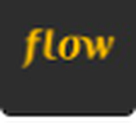

Rafael Zanini Francucci
Software Engineer, especialista em Front-end
São Paulo, Brasil
Arquitetura e desenvolvimento de aplicações web escaláveis: construo interfaces de alta performance, acessíveis e responsivas com React.js, Next.js e TypeScript, garantindo segurança de tipos e manutenibilidade de código em todo o ciclo de desenvolvimento.
Sobre
Desenvolvedor Full Stack especializado em tecnologias modernas de Front-End e Web, com profundo conhecimento em React, Next.js, Node.js e TypeScript. Tenho experiência na construção de aplicações web de alta performance, escaláveis e de fácil manutenção, desde a arquitetura e integração de APIs até o deploy e a otimização.
Domínio em desenvolvimento baseado em componentes, renderização no servidor (SSR), geração de sites estáticos (SSG) e design de interfaces responsivas com foco em performance e acessibilidade.
Proficiente em APIs RESTful e GraphQL, gerenciamento de estado (Redux, Zustand, Context API) e frameworks de teste (Jest, Cypress, Playwright). Tenho experiência com bancos de dados (PostgreSQL, MongoDB, Redis, Prisma) e ferramentas de DevOps (Docker, CI/CD, Vercel, AWS). Sou apaixonado por código limpo, escalabilidade, experiência do desenvolvedor e pela entrega de produtos digitais elegantes usando as tecnologias web mais recentes.
Atualmente, estou expandindo meu conhecimento em Python e no desenvolvimento de agentes de IA para aprimorar experiências de usuário e automação. Apaixonado por tecnologia, exploro constantemente formas de unir engenharia de software com as tendências emergentes de IA.
Meu conjunto de habilidades também inclui Docker, Git, CI/CD, MySQL, PostgreSQL, MongoDB, Firebase, Express.js, Astro.js, Vue.js, Tailwind CSS, SCSS, Styled-components, TDD, Jest, Testing Library, Tsup, Vite e Puppeteer, entre diversas outras ferramentas e frameworks.
Professor voluntário desde 2021Ensino front-end para quem nunca escreveu uma linha de código, no programa Do Zero ao Um.
Experiência
Trajetória recente, da mais atual para a mais antiga.
- Arquitetura e desenvolvimento de aplicações web escaláveis: construção de interfaces de alta performance, acessíveis e responsivas com React.js, Next.js e TypeScript, garantindo segurança de tipos e manutenibilidade de código em todo o ciclo de desenvolvimento.
- Gerenciamento de estado avançado e lógica modular: fluxos de dados robustos com Redux e Context API para estados globais complexos e efeitos colaterais, otimizando performance e consistência dos dados.
- Implementação e orquestração de micro-frontends: arquiteturas para deploys independentes, flexibilidade tecnológica e integração fluida entre módulos desacoplados em ecossistemas de grande escala.
- Design systems e estilização moderna: interfaces consistentes e refinadas com Shadcn/ui para componentes acessíveis e Styled Components ou Tailwind CSS para estilos altamente customizáveis.
- Plataformas com IA e workflows inteligentes: contribuição em plataformas de curadoria com IA, unindo interatividade de front-end a agentes inteligentes e workflows automatizados de back-end.
- DevOps e infraestrutura escalável: ambientes containerizados com Docker e pipelines de CI/CD automatizados (GitHub Actions, Google Cloud) para entregas rápidas e de alta disponibilidade.
- Colaboração ágil e descoberta estratégica de produto: atuação em Scrum/Kanban, colaborando com designers de UX/UI e stakeholders para traduzir objetivos de negócio em requisitos técnicos.

- Desenvolvimento de aplicações web modernas, responsivas e de alta performance (Vue.js, React.js, Next.js, Astro.js, TypeScript, Tailwind CSS).
- Colaboração próxima com designers de UX/UI e product managers para implementar funcionalidades, melhorar taxas de conversão e otimizar jornadas do cliente.
- Integração com back-end e desenvolvimento de APIs (Node.js, Express.js, REST).
- Infraestrutura escalável e pipelines de CI/CD (Google Cloud, Docker, GitHub Actions).
- Participação em uma plataforma de curadoria com IA, integrando interatividade de front-end com automação de workflows e agentes inteligentes.
- Colaboração ativa com stakeholders na descoberta e desenvolvimento de produto, contribuindo com análise de requisitos, desenho de soluções e priorização de funcionalidades.
- Desenvolvimento e manutenção de interfaces de e-commerce de alta performance e responsivas para a Leroy Merlin, com React.js, Next.js, Vue.js e TypeScript, garantindo experiência consistente entre web e mobile.
- Colaboração próxima com designers de UX/UI e product managers para implementar funcionalidades, melhorar taxas de conversão e otimizar jornadas do cliente.
- Integração de componentes de front-end com APIs REST e GraphQL, lidando com catálogos de produtos dinâmicos, carrinho de compras e fluxos de checkout.
- Implementação de testes A/B, rastreamento de analytics e otimizações de performance para aumentar o engajamento do usuário e a velocidade de carregamento das páginas.
- Participação em cerimônias ágeis, planejamento de sprints e code reviews, contribuindo para a melhoria contínua dos processos de desenvolvimento.
- Projeto base em React para plataforma de upload de dados, na Serasa Experian.
- Integração com sistema legado em Next.js.
- Fluxo de dados com back-end em Python e Node.js.
- Arquitetura e desenvolvimento de aplicações web escaláveis: construção de interfaces de alta performance, acessíveis e responsivas com React.js, Next.js e TypeScript, garantindo segurança de tipos e manutenibilidade de código em todo o ciclo de desenvolvimento.
- Gerenciamento de estado avançado e lógica modular: fluxos de dados robustos com Redux e Context API para estados globais complexos e efeitos colaterais, otimizando performance e consistência dos dados.
- Colaboração ágil e descoberta estratégica de produto: atuação em Scrum/Kanban, colaborando com designers de UX/UI e stakeholders para traduzir objetivos de negócio em requisitos técnicos.
Trajetória anterior (2009 a 2019)
- Liq · Technology Analyst · 2014 a 2019. Coordenação de squad full-stack e API de dados para BI.
- Netbiis · Frontend Developer · 2013 a 2014. Projeto base em React reaproveitado por outros times.
- W51 Informática e Marketing · Frontend Developer · 2012. Sites em HTML, CSS, JavaScript e jQuery.
- Grupo TV1 · Frontend Developer · 2010 a 2012. Sites em HTML, CSS e JavaScript.
- Astéria Internet Solutions · Web Developer · 2009 a 2010. Primeiros passos com HTML e CSS.